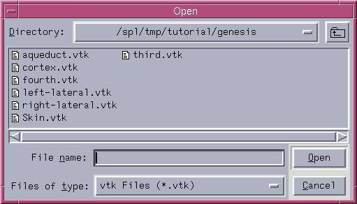

A model is a 3D surface.
Technical Note: The data format for the models that Slicer reads
in is vtkPolyData.
To load models:
- In the Data panel, click Add Model.
The Props tab of the Models panel will appear.

- To find the model file, click Browse. A dialog box appears.

- Select the model that you would like to load, and click Open.
- The Name field is the name that your model will
have within Slicer. You may change this to something descriptive, like
"Vessels".
- From the Color pull-down menu, you can select your
model's color as it will appear in the 3D Viewer.
- Finally, click Apply to read in the model.